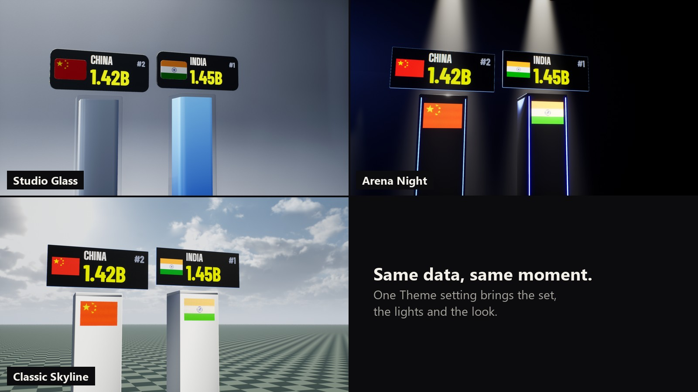
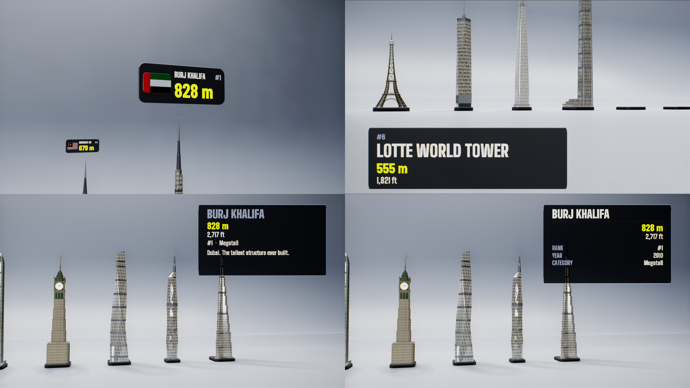
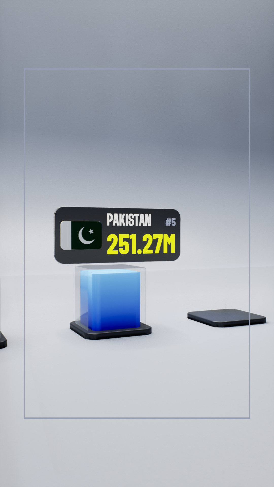

Looks: themes, label styles and Shorts
Themes
A Theme (Comparison | Theme) brings two things:
- The look: column and card meshes, materials, fonts, sizes, spotlights and grade. They are copied onto the actor's own settings, so you can change any of them afterwards. Apply Theme copies the theme's look again.
- The set: lights, sky light, sky, floor, fog and backdrop, built around the comparison. It moves with the actor and rides along with the Speed Race camera. Untick Build Set to light your own level instead.
Drop the actor into an empty level, pick a theme, and the scene is complete. No theme yet? The comparison shows its plain look: grey boxes in a lit level, unlit ones in an empty level. That is normal: pick a theme. A Basic level's own sun competes with the theme's set, so start from an Empty Level, or untick Build Set to keep your own lights.
| Theme set | Character | Demo map |
|---|---|---|
| Studio Glass | bright glass studio, the default | L_CK_StudioGlass |
| Arena Night | dark, spotlit | L_CK_ArenaNight |
| Classic City / Classic Skyline (Cumulus, Cirrus, Overcast, Blue, Dusk) | street-level city under different skies | L_CK_ClassicSkyline_Cumulus, L_CK_ClassicSkyline_Dusk |
| Open Plain Day, Alpine, Prairie | open terrain built from public elevation and aerial data | L_CK_EnvironmentLadder_OpenPlain, L_CK_OpenPlainAlpine, L_CK_OpenPlainPrairie |
| Deep Space | stars and void | L_CK_DeepSpace |
| Flat Strip, Dark Gloss, Grey Ruler | plain graphic looks | L_CK_FlatStrip |
| City Street, Ocean Surface, Stadium Track, Stadium Crowd, Warehouse | environment demos | see Environment demos |

Topic (Comparison | Theme): type what the video is about ("planets", "football", "buildings"). Suggested Theme shows the best match and Use Suggested Theme applies it. Each theme's Topics list is editable.
Your own theme: style a comparison, create a data asset of class CK Theme, set it as the Theme, put back the look edits you want to keep (setting a theme copies its look), then press Save Look To Theme and save the asset. The set (lights, props, sky, fog) is edited in the asset itself.
All meshes, materials and fonts stay plain properties (Look | Column, Look | Label, Overlay, Grade). Item Material puts one material on every item mesh, for a silhouette look.
Time of day
Time Of Day (Comparison | Theme, hours, -1 = the theme's sun) moves the set's sun along a clear day: low and warm at 6 and 18, high and white at noon. Each comparison actor has its own. For a per-item sun add a time_of_day column (or Time Of Day in a CKItem DataTable): 7 morning, 12 noon, 17 evening. Blank or -1 inherits the actor's setting; an invalid hour is reported and inherits. Time Of Day Fade blends the sun as the next item comes into view. Set Time Of Day changes the inherited setting from Blueprint without a rebuild. This is a clear-day sun control, not a night sky simulation, and it needs a directional light in the theme's set.
Label styles
Label Style (Look | Label):
| Style | What it is |
|---|---|
| Card | a 3D card over each item: rank, name, counting value, flag |
| Lower Third | a broadcast strip for the item in focus: name, value, second unit, tags |
| Museum | title, value, tags and the item's description lines |
| Spec Sheet | name, value, then rank, year, category, status and source rows |

- Letterbox (Lower Third, 16:9): cinema bars at Letterbox Aspect; the source line moves into the bottom bar. Each bar is at least 10 % of the frame so its text stays inside the safe area.
- Show Tags adds category, confidence and evidence as a tag line.
- Second unit (Values): Secondary Unit Factor 3.28084 and Secondary Suffix " ft" shows "828 m / 2,717 ft".
- Numbers count up in Count Seconds and keep one unit while counting (no "999 K" jumping to "1.0 M"). Value Reveal picks Roll, Count or Instant.
- Digit Grouping switches between 1,234 and 1 234 and 1.234,5.
Shorts, square and timing
Aspect (Comparison | Camera) is 16:9 (YouTube), 9:16 (Shorts) or 1:1. Cards, overlay and framing adapt. In 9:16 everything stays inside the Shorts Safe Box, clear of the platform's buttons and caption; tick Show Safe Area to see it while you lay out.

- Apply Long Form Timing and Apply Shorts Timing (ranked rows) set the pacing and fit the sequence.
- End Question adds a closing card ("Which one surprised you?"). Loop Ending returns the camera to the first frame so the Short loops seamlessly.
- Style Seed with Apply Style Seed: a different camera angle, height, rhythm and closing orbit per seed, so two videos from the kit do not look alike. The same seed always gives the same result.
- Brand (Comparison | Brand): Brand Logo, Brand Text, Brand Corner put your signature on the picture. Backdrop Text and Ticker Text add large letters or a scrolling band in the set.
Your own level and camera path
Place the comparison in your existing level and untick Build Set. Your lights, scenery and other actors stay unchanged, and the selected theme still supplies the comparison's look. Under Comparison | Own Level:
- Custom Ground optionally adds your ground mesh, material slots and instance transforms, in centimetres relative to the comparison actor.
- Camera Path Actor: an actor with a Spline Component of at least two points. The camera follows the spline's position and forward direction at constant distance per second. Camera Path Start Hold and Camera Path End Hold reserve seconds for the end views. An invalid path falls back to the generated camera and Rebuild reports it in Data Warnings. Set Camera Path Actor does the same from Blueprint; pass None to restore the generated camera.